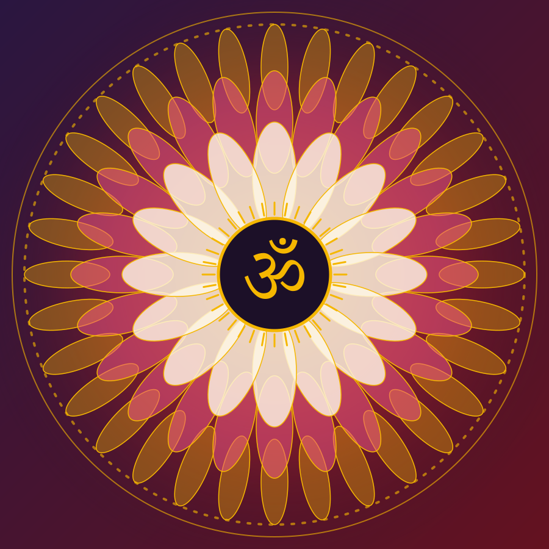

नवरात्रि · नवदुर्गा
Nine Nights. Nine Forms. One Divine Shakti.
Navratri is the Hindu festival of nine nights devoted to the goddess Durga in her nine forms. Each night honours one Devi, with her own story, symbols and qualities.

What is Navratri?
The word comes from Sanskrit: nava means nine and ratri means night. Navratri is celebrated in the autumn month of Ashwin and, in a shorter spring observance, in Chaitra. It is followed by Vijayadashami, the tenth day.
Hindus honour the goddess in many names and forms. In Navratri she is worshipped as Durga, whose nine forms, the Navadurga, are remembered one for each night.
Why Shakti?
Shakti means power or energy. In many Hindu traditions it is the divine feminine, the force that creates, sustains and renews the world. Navratri celebrates her as protector, mother and teacher.
Traditions explain the festival in different ways. This site describes common versions of the stories and notes where they vary.
The Nine Devis
One form for each night. Colours shown follow the 2026 chart; colour conventions vary by year and community.
Loading the Devis…
The colours of the nine nights
Select a colour to read what it symbolises and which Devi it is paired with.
The Meaning Behind the Nine Nights
The nine forms follow a story from beginnings to fulfilment. One way of reading that movement is in three stages of three nights.
Begin with the first night
Read the stories, learn the symbols and save the Devis you want to return to.
Explore the Nine Devis